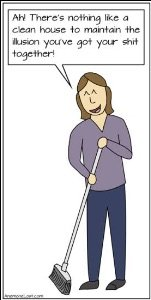

― Maggie Stiefvater
Maybe it’s because the holidays are upon us that more people are contacting me to “work on” how to force themselves to be neater, cleaner, tidier.
Bad housekeepers are coming out of the undusted woodwork. Dishes sit in sinks, unfolded laundry piles up, dust settles on tabletops.
Also apparently lacking is the motivation to correct this grievous behavior.
So things are out of place all over the place. (funny, because is “out of place” even possible?)
Still, it is amazing how many folks are stressed out, guilty and shamed by the inability to keep a clean house.
Perhaps because everyone knows that a sloppy home “reflects” something about us. Unkempt home reflects unkempt self. Messy home reflects messy mind.
As usual, it's about us.
That rat's nest we call a home is no exception.
Untidy means we're bad, lazy, doing things wrong.
Never-mind that if we did clean, dust would settle right back on those counters the instant we stopped wiping them.
Because dust is the boss of dust.
Not us.
While we’re busily saying, “Disarray is wrong,” nature laughs.
Because nature adores a good mess. In fact nature endorses mess.
I mean, have you looked outside lately? There’s dirt out there!
There is zero evidence that existence wants our homes clean.
So this human problem may be less about whether things are tidy,
And more about the attempt to impose our will and order and control on everything including environment.
We want to be the boss of all things and situations, including the mind, and then we want the power to make ourselves make all this happen.
Which is why we either spend vast amounts of our limited time here on this planet cleaning what nature immediately makes messy again…
Or we fail. Like the incompetent gods we are.
You can see why we hate chaos.
And why we find tidiness calming. Because all is right with the world when disorder is controlled and put in neat rows.
By us.
So yes, some folks run around stuffing things in closets and vacuuming and de-piling before company comes.
Hoping for a taste of ordered calm, and hoping that chaos won’t expose them for the insignificant, easily-wiped-out, powerless flecks of dust they really are.
Now of course there’s nothing wrong with any of this. I mean, if there’s calm in a spotless home, then why not clean it.
It’s just that by trying to impose order, we really are fighting what is.
It's a never-ending job, always requiring more. (Though somehow when it comes to enlightenment, we expect one and done. Just saying. But I (sort of) digress.)
Meanwhile, there could actually be more calm to be found in the willingness to let disorder be what it is, instead of continually fighting a losing battle.
And instead of imposing some weird human notions of rightness, power and fastidiousness.
Though I realize that the yelling, internal parental voice may not allow such willingness or acceptance.
Still, as always, this is it. And it- existence- consistently includes dirt and disarray.
Besides, noticed or not, order is already here. It just happens to include pet hair and scattered piles and disorganization.
So fighting grunginess less, and letting mess have us more, might bring a truer calm and a truthier truth.
Though either is as good a way to spend our life times as any.
We can’t get this wrong.
Which is pretty darn
Neat
When we think about it.
And no scrubbing required.
every week.
"Chaos is always losing, but never defeated." --Alan Watts
